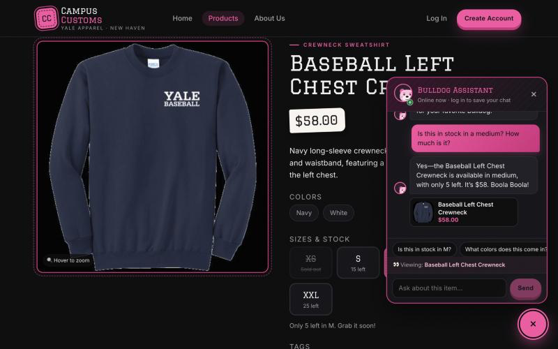
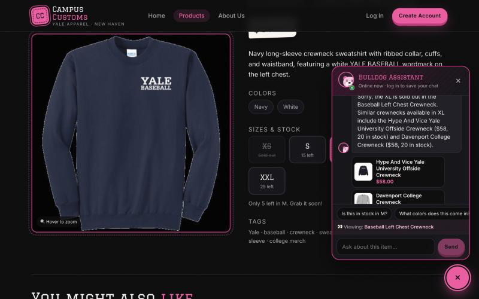
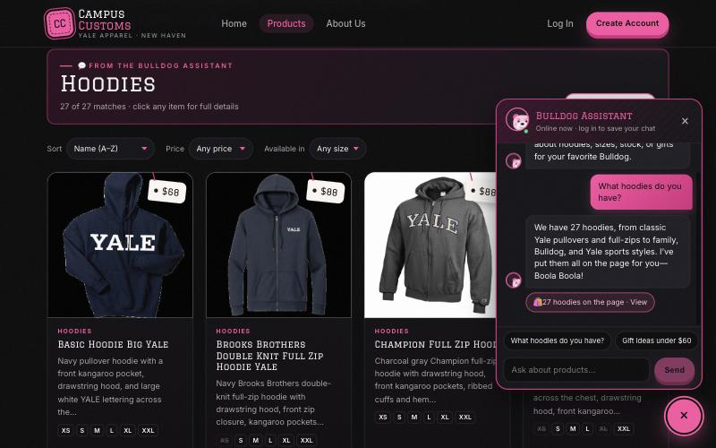
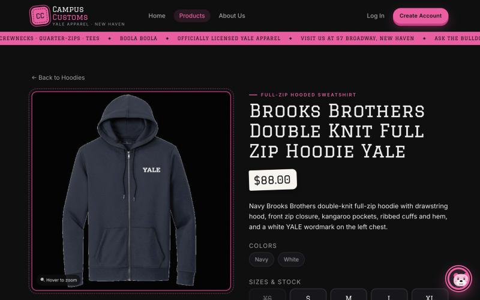
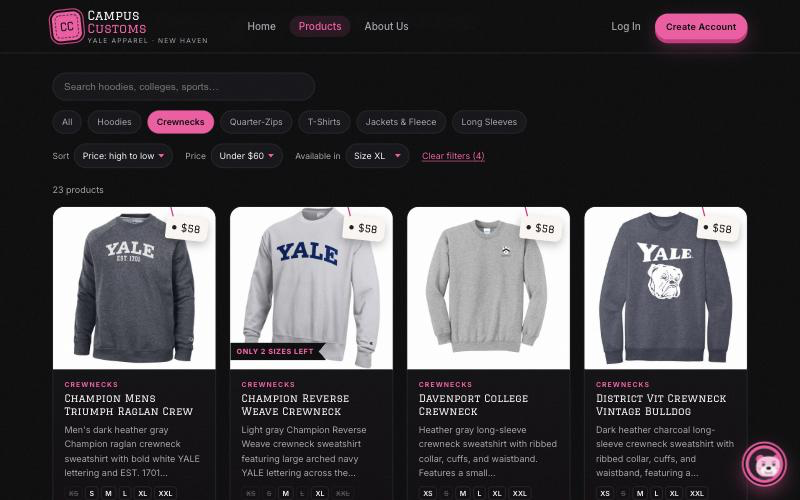

Campus Customs: App Check
Problem 11 · Live-site test of the running app (React front end + FastAPI / PydanticAI agent) · Tested Oct 6, 2026 · Every number in the screenshots was checked against data/campus_customs.db.
| # | Check | Result | Screenshots |
|---|---|---|---|
| 1 | Chat checks an item's inventory level (honest stock and price from the DB) | PASS | inventory.png, inventory_soldout.png |
| 2 | Dynamic search-result cards appear after a category question ("hoodies") | PASS | search_cards.png, search_detail.png |
| 3 | Problem 9 usability feature: sort, size, and price filters | PASS | usability_filters.png |
Check 1 · Chat checks the inventory level of an item
Goal: the Bulldog Assistant answers a stock and price question with the real numbers from the database, not invented ones.
1a. In-stock size, with price

1b. Sold-out size is stated clearly

Check 2 · Dynamic search-result cards after a category question
Goal: asking about a type of item makes the website show all the matching products as cards, and those cards still open the single-item page.
2a. "What hoodies do you have?" puts 27 cards on the page

2b. A chat-pulled card opens the detail view

Check 3 · Problem 9 usability feature: sort, size, and price filters
Goal: shoppers can narrow the catalogue to what they can actually buy in their size and budget, and the view is kept in the URL.

/products?cat=Crewnecks&size=XL&sort=price-desc&max=60 reproduces this exact view, so the back button and shared links keep it.
Two more Problem 9 features also appear in the screenshots above: suggestion chips in the chat ("Is this in stock in M?", "What colors does this come in?") in 1a, and the find_similar_products tool suggesting in-stock XL alternatives in 1b.
Test setup: front end npm --prefix frontend run dev (http://localhost:5180), backend cd backend && uvicorn main:app --reload --port 8000, agent model gpt-5.6-luna through Portkey. Browsed as a guest (logged out) at a 1280×800 desktop size. Screenshots are in output/app_check_images/. Click any screenshot to open it full size.